- Welcome to Bitrise documentation!
- Getting started
- Signing up for Bitrise
- Creating your first Workspace
- Adding a new app
- Webhooks and triggers
- Builds and Workflows
- Testing and deploying
- Migrating to Bitrise
- Signing up for Bitrise
- Creating your first Workspace
- Adding a new app
- Getting started with iOS apps
- Getting started with Android apps
- Getting started with React Native apps
- Getting started with Flutter apps
- Getting started with Ionic/Cordova apps
- Getting started with Expo apps
- Infrastructure
- Accounts
- Workspaces
- Apps
- Workflows and Pipelines
- Builds
- Code signing
- Testing
- iOS testing
- Android testing
- Flutter testing
- React Native testing
- Device testing with Firebase
- Test Reports
- Test Reports
- Exporting to Test Reports from any Step
- Running unit and UI tests for iOS apps
- Installing an .ipa file
- Registering test devices for iOS apps
- Device testing for iOS
- Running Android unit tests
- Device testing for Android
- Running tests in the Visual Studio App Center
- Running Detox tests on Bitrise
- Measuring your code coverage with Codecov
- Deploying
- Insights
- Bitrise CLI
- API
- References
- Getting started
- Bitrise Docs
Webhooks
Bitrise makes extensive use of incoming webhooks to automatically trigger builds on Bitrise and outgoing webhooks to send reports of build events to other services, such as Slack.
A webhook is a user-defined callback that is triggered by some event, such as pushing code to a repository. Bitrise makes extensive use of webhooks:
Incoming webhooks, registered with your Git service provider, are used to automatically trigger builds on Bitrise and to enable the use of Git Insights.
Webhook issues
If your builds triggers don't work, there might be a problem with your webhooks: Builds aren't getting triggered.
Outgoing webhooks are used to send reports of build events to other services, such as Slack.
You can add an incoming webhook automatically either when creating an app or later; it’s also possible to manually add a webhook to any supported service.
Outgoing webhooks can be added either on the website or via the Bitrise API.
Adding incoming webhooks
An incoming webhook on Bitrise serves one purpose: to start builds automatically when a certain code event (code push, Git Tag, pull request) happens. You can setup incoming webhooks manually or automatically when adding your app to Bitrise.
Most source code hosting service provides a feature to register webhooks. A webhook is basically an URL which will be called on specified events.
An incoming webhook on Bitrise serves one purpose: to start builds automatically when a certain code event (code push, Git Tag, pull request) happens. You just need to register an incoming webhook to your repository and configure build triggers.
Webhook issues
If your builds triggers don't work, there might be a problem with your webhooks: Builds aren't getting triggered.
Registering an incoming webhook automatically
Automatic webhook registration is supported for apps that have their code hosted on GitHub, GitLab and Bitbucket.
If you use one of the above services as your source code hosting provider, Bitrise automatically sets up a webhook for it with a click of a button at the end of your app setup journey.
GitHub App integration
If you use the Bitrise GitHub App to connect your Bitrise Workspace to a Git account or organization, you don't need a webhook. The app can trigger builds or send status updates without it.
However, you can always change this webhook later or add a new one if you skipped registering a webhook when adding the app.
You can automatically register a webhook to the repository on the App settings page of the app. Automatic registration means that Bitrise registers the webhook at the repository, so you don't have to manually go there and add it on your Git provider's website. This requires:
That you have admin rights to the repository.
That the account that hosts the repository is connected to your Bitrise account.
To register a webhook automatically:
Make sure your Bitrise account is connected to the Git provider account that hosts the repository and that your Git account has admin rights to the repository.
Open your app on Bitrise with a user that has the Admin role on the app.
On the main page of the app, click on the App Settings icon: .
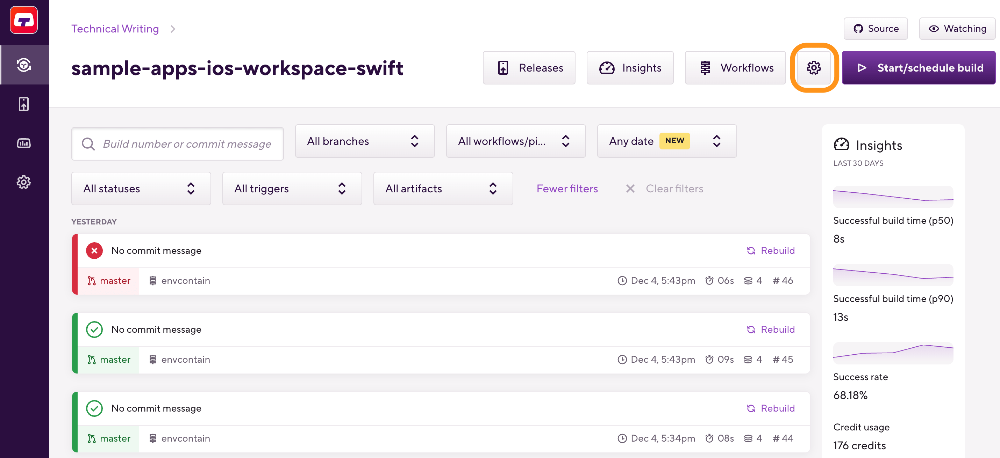On the left, select Integrations.
On the top of the Integrations page, select the Webhooks tab.
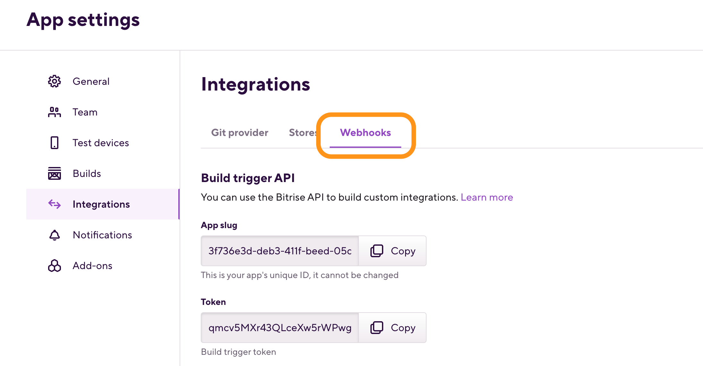In the Incoming webhooks section, select .
Bitrise will automatically register a webhook at the app's repository.
Registering an incoming webhook manually
You can manually setup or change your webhooks after you registered your app on Bitrise. The process is different depending on your Git provider but on Bitrise, the basic steps are the same for each.
Create your own webhook implementation
Our webhook processor is Open Sourced. If you are looking for an unsupported solution, you can create an issue on the GitHub page or create a pull request with the implementation. You can also run your own webhook provider behind your own firewall if required.
Open your app on Bitrise with a user that has the Admin role on the app.
On the main page of the app, click on the App Settings icon: .
In the Incoming webhooks section, .
On the top of the Integrations page, select the Webhooks tab.
In the pop-up window, select your service from the dropdown menu.
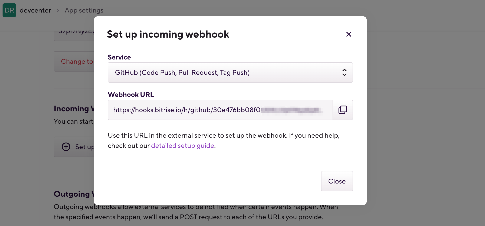Copy the webhook URL and register it at your Git provider.
Adding a GitHub webhook
You can specify webhooks on Github so that Bitrise automatically triggers a build of your app whenever you perform a specified action, such as a code push or a pull request.
GitHub App integration
If you connect your GitHub account or organization to Bitrise via the GitHub App integration, you don't need a webhook for any purpose.
You can specify webhooks so that Bitrise automatically triggers a build of your app whenever you perform a specified action, such as a code push or a pull request. For GitHub, all you have to do is register your bitrise-webhooks URL as a Webhook in your GitHub repository.
In addition, you can take advantage of Git Insights. Git Insights enables you to quantify and optimize Git collaboration. It provides crucial metrics like pull request cycle time and merge frequency.
You can register a webhook either automatically or manually. This guide walks you through the process of manually registering a webhook.
Open your app on Bitrise with a user that has the Admin role on the app.
On the main page of the app, click on the App Settings icon: .
On the left, select Integrations.
Click .
In the pop-up window, select GitHub from the dropdown menu.
Copy the webhook URL.
Navigate to your GitHub repository and select Settings.
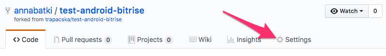Select Add webhook under Webhooks.
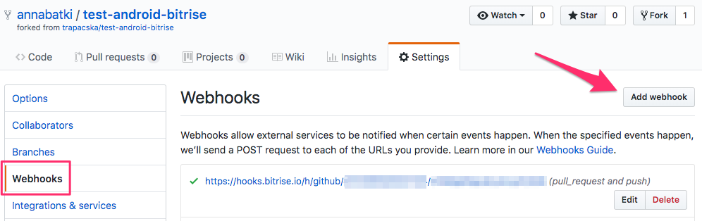Paste the GitHub Webhook URL from Bitrise to the Payload URL.
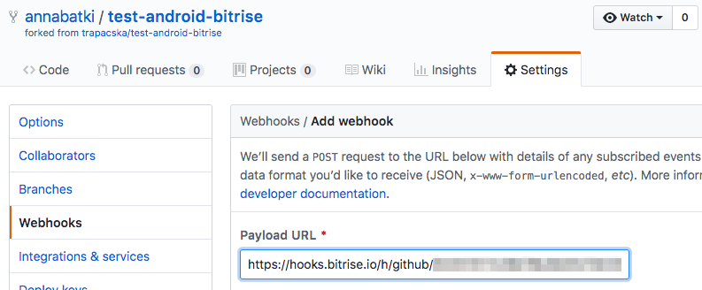And on the same page, select Let me select individual events.
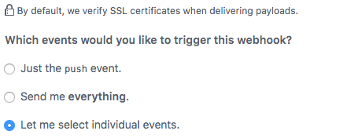Select Pull request, Push, and Pull request review comments.
Press the Add webhook button and you're done.
Adding a GitLab webhook
You can specify webhooks on Gitlab so that Bitrise automatically triggers a build of your app whenever you perform a specified action, such as a code push or a pull request.
You can set up webhooks so that Bitrise automatically triggers a build of your app whenever you perform a specified action, such as a code push or a pull request. For GitLab, all you have to do is register your bitrise-webhooks URL as a Webhook in your GitLab repository.
In addition, you can take advantage of Git Insights. Git Insights enables you to quantify and optimize Git collaboration. It provides crucial metrics like pull request cycle time and merge frequency.
You can register a webhook either automatically or manually. This guide walks you through the process of manually registering a webhook.
Open your app on Bitrise with a user that has the Admin role on the app.
On the main page of the app, click on the App Settings icon: .
On the left, select Integrations.
Click .
In the pop-up window, select GitLab from the dropdown menu.
Copy the webhook URL.
Open your project on GitLab.com
Go to Settings of the project.
Select Webhooks and then click .
Enter the
bitrise-webhooksURL in the URL field.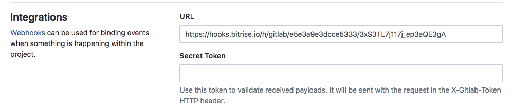In the Trigger section select:
Push events
Tag push events
Merge request events
Comments
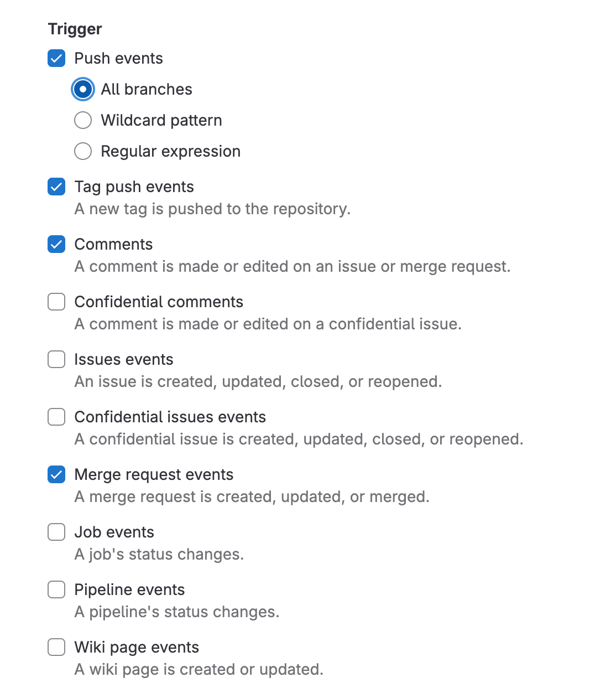Click Add webhook.
That’s all! The next time you push code, push a new tag or create/update a merge request a build will be triggered (if you have Trigger mapping defined for the event(s) on Bitrise).
Adding a Bitbucket webhook
You can specify webhooks on Bitbucket so that Bitrise automatically triggers a build of your app whenever you perform a specified action, such as a code push or a pull request.
To have Bitrise automatically start a build every time you push code into your repository, you can set up a webhook at your code hosting service which will automatically trigger a build on Bitrise with the code you push to your repository.
In addition, you can take advantage of Git Insights if you set up the webhook with the necessary permissions. Git Insights enables you to quantify and optimize Git collaboration. It provides crucial metrics like pull request cycle time and merge frequency.
You can register a webhook either automatically or manually. This guide walks you through the process of manually registering a Bitbucket webhook.
Open your app on Bitrise with a user that has the Admin role on the app.
On the main page of the app, click on the App Settings icon: .
On the left, select Integrations.
Click .
In the pop-up window, select Bitbucket Webhooks from the dropdown menu.
Copy the webhook URL.
Navigate to your Bitbucket repository and select Settings.
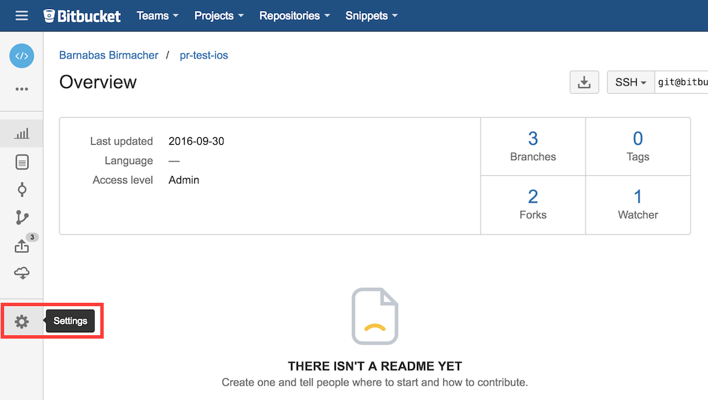Select Webhooks from the left.
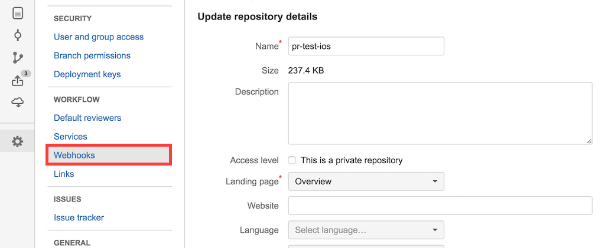Select Add Webhook.
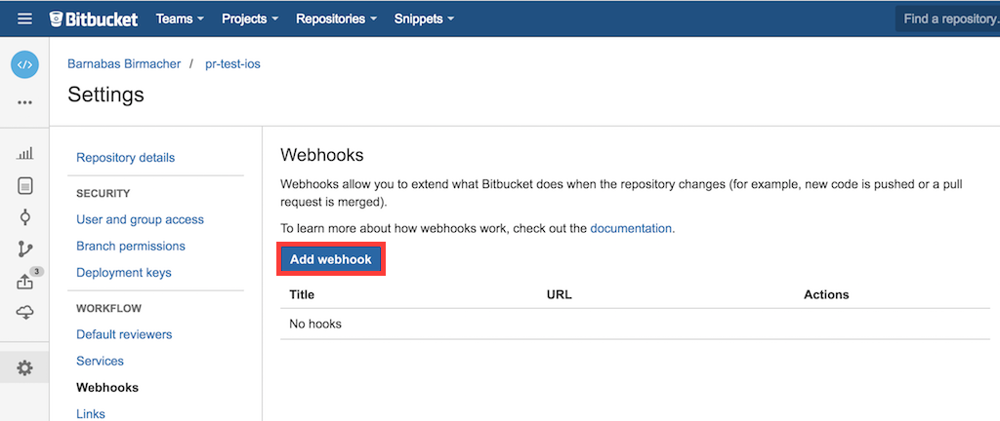Paste the Bitbucket Webhook URL from Bitrise to the URL and add a Title.
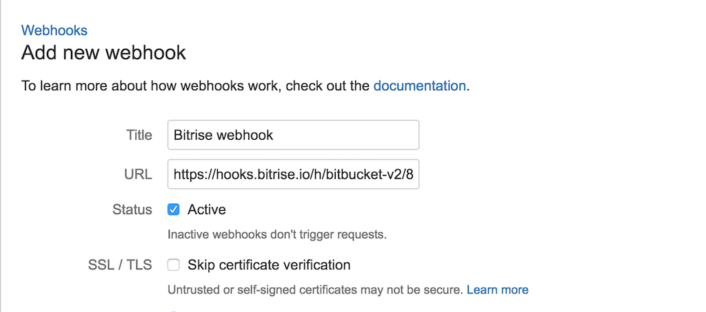Select Choose from a full list of triggers.
Select the necessary permissions:
For automatically triggering builds, you just need to select Push from the Repository permissions, and Created, Updated and Comment created and Comment updated from the Pull Request permissions.
For Git Insights, you need everything you need, in addition to the above, Merged and Declined from the Pull Request permissions.
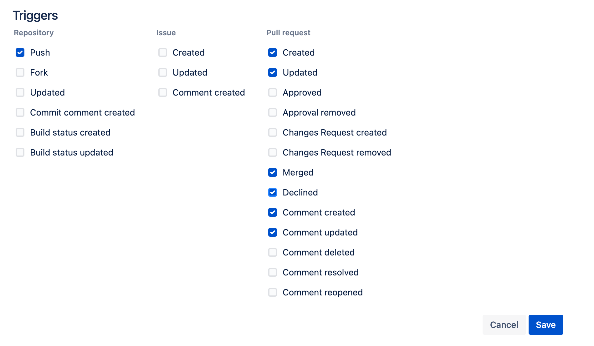
Adding a Gogs webhook
You can specify webhooks on Gogs so that Bitrise automatically triggers a build of your app whenever you perform a specified action, such as a code push or a pull request.
You can set up webhooks so that Bitrise automatically triggers a build of your app whenever you perform a specified action. For Gogs, all you have to do is register your bitrise-webhooks URL as a Webhook in your Gogs repository.
Open your app on Bitrise with a user that has the Admin role on the app.
On the main page of the app, click on the App Settings icon: .
On the left, select Integrations.
Click .
In the pop-up window, select Gogs from the dropdown menu.
Copy the webhook URL.
Open your project on your repository’s hosting URL.
Go to Settings of the project.
Select Webhooks, Add Webhook, then Gogs.
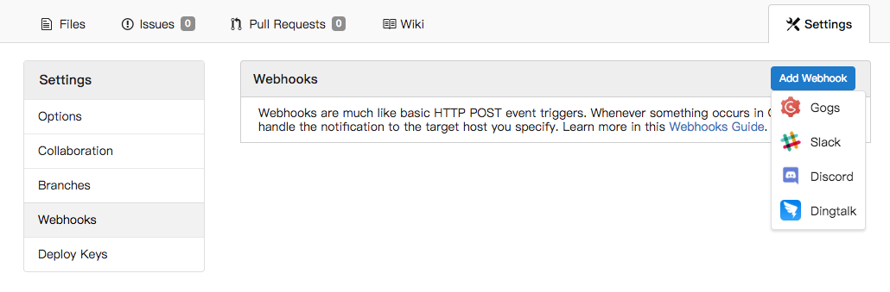Specify the
bitrise-webhooksURL (.../h/gogs/BITRISE-APP-SLUG/BITRISE-APP-API-TOKEN) in the Payload URL field.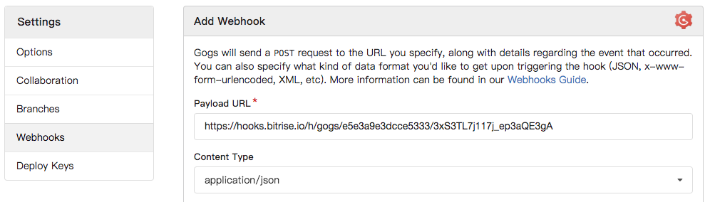Set the Content Type to
application/json.A Secret is not required at this time.
Set the trigger to be fired on Just the push event.
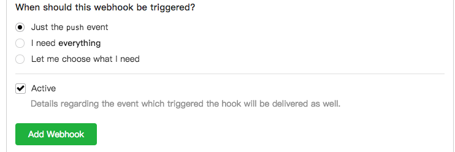Click Add Webhook.
And you’re done! From now on, every code push to your Gogs repository will trigger a build on Bitrise.
Adding a Slack webhook
You can set up a Slack app with Slash Commands that allow you to trigger Bitrise builds in Slack.
Slash commands for Slack apps allow you to send a payload to a service by typing a command in Slack. You can use Slash Commands to trigger Bitrise builds by creating a Slash Command. The Request URL of the Slash Command must be the Bitrise webhook URL.
Open your app on Bitrise with a user that has the Admin role on the app.
On the main page of the app, click on the App Settings icon: .
Go to your app’s page on Bitrise.
On the left, select Integrations.
Click .
Choose Slack from the dropdown menu.
Copy the webhook URL.
Open your Slack app.
If you don't have one, create a Slack app.
On the app management dashboard, select Slash Commands from the navigation menu.
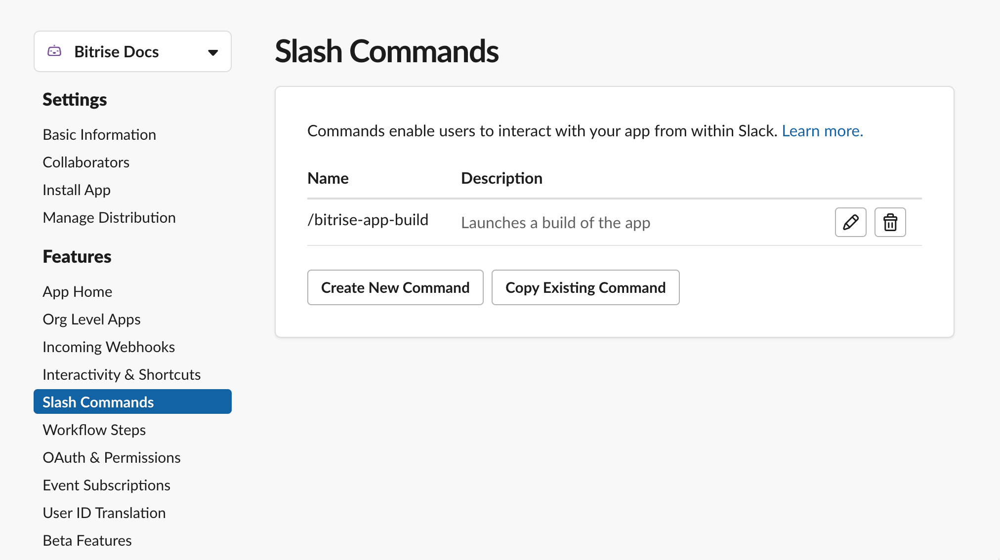Click .
Paste the webhook URL in the Request URL field.
Fill out the rest of the fields to finish configuring the Slash Command and click .
That's it - you have successfully registered a webhook to your Slack app. You can now trigger builds using a Slash Command.
Adding a Visual Studio webhook
You can specify webhooks in Visual Studio so that Bitrise automatically triggers a build of your app whenever you perform a specified action, such as a code push or a pull request.
You can set up webhooks so that Bitrise automatically triggers a build of your app whenever you perform a specified action, such as a code push or a pull request. For Visual Studio, all you have to do is register your bitrise-webhooks URL for a visualstudio.com project as a Service Hooks integration.
Open your app on Bitrise with a user that has the Admin role on the app.
On the main page of the app, click on the App Settings icon: .
On the left, select Integrations.
Click .
In the pop-up window, select Visual Studio from the dropdown menu.
Copy the webhook URL.
Open your project on visualstudio.com.
Go to the Admin/Control pane of the project.
Select Service Hooks.
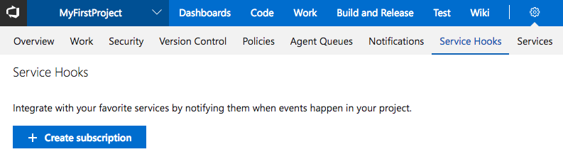Click Create subscription.
Create a service integration:
In the Service list select the Web Hooks option.
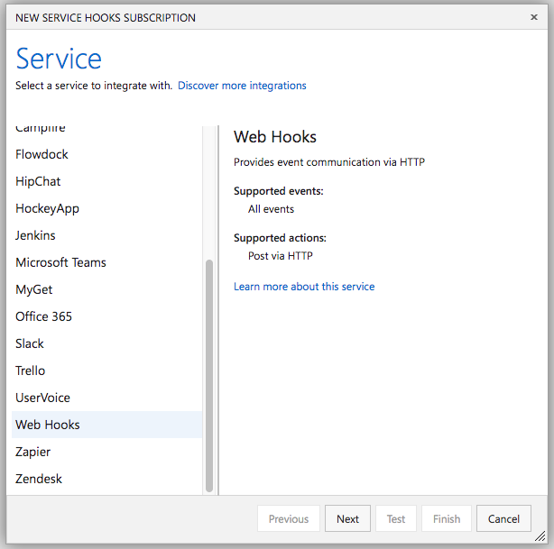Select the Code pushed event as the Trigger.
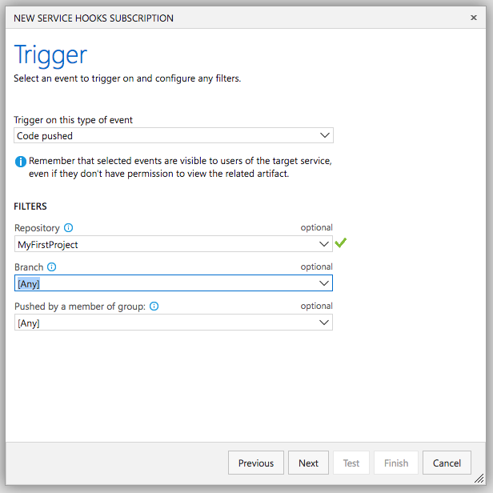In the Filters section select the Repository you want to integrate.
You can leave the other filters on default.
Click Next.
On the Action setup form enter the
bitrise-webhooksURL (.../h/visualstudio/BITRISE-APP-SLUG/BITRISE-APP-API-TOKEN) in the URL field. You can leave every other option on default.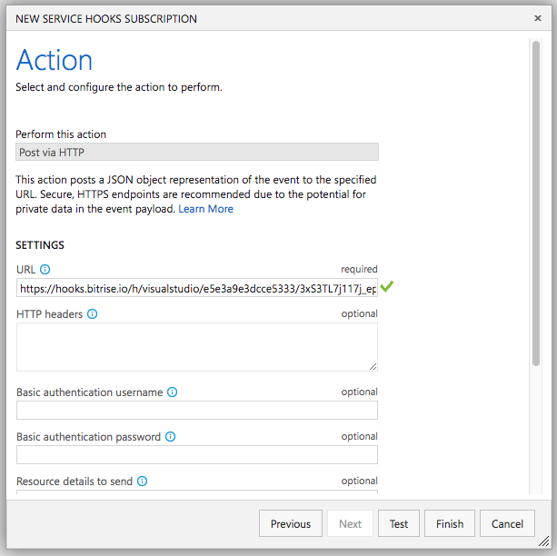
Click Finish.
Adding an Assembla webhook
You can specify webhooks on Assembla so that Bitrise automatically triggers a build of your app whenever you perform a specified action, such as a code push or a pull request.
You can set up webhooks so that Bitrise automatically triggers a build of your app whenever you perform a specified action, such as a code push or a pull request. For Assembla, you only need to add your bitrise-webhooks URL to your Assembla space.
Open your app on Bitrise with a user that has the Admin role on the app.
On the main page of the app, click on the App Settings icon: .
On the left, select Integrations.
Click .
In the pop-up window, select Assembla from the dropdown menu.
Copy the webhook URL.
Open your space on assembla.com or your organisation’s assembla domain.
Go to the Webhooks section of the space.
Select Create New Webhook.
Set Title to Bitrise Webhook.
Specify the
bitrise-webhooksURL. (.../h/assembla/BITRISE-APP-SLUG/BITRISE-APP-API-TOKEN) in the External url field.Select
application/jsonin the Content type field.Paste the following code to Content:
{"assembla": {"space": "%{space}", "action": "%{action}", "object": "%{object}"}, "message": {"title": "%{title}", "body": "%{body}", "author": "%{author}"}, "git": {"repository_suffix": "%{repository_suffix}", "repository_url": "%{repository_url}", "branch": "%{branch}", "commit_id": "%{commit_id}"}}Select Code commits and/or Git Push in the Post updates about: section.
Click Add.
That’s all! The next time you push code a build will be triggered (if you have Trigger mapping defined for the event(s) on Bitrise).
Adding a Deveo webhook
You can specify webhooks on Deveo so that Bitrise automatically triggers a build of your app whenever you perform a specified action, such as a code push or a pull request.
You can set up webhooks so that Bitrise automatically triggers a build of your app whenever you perform a specified action, such as a code push or a pull request. For Deveo, all you have to do is register your bitrise-webhooks URL for a Deveo repository.
Open your app on Bitrise with a user that has the Admin role on the app.
On the main page of the app, click on the App Settings icon: .
On the left, select Integrations.
Click .
In the pop-up window, select from the dropdown menu.
Copy the webhook URL.
Open your repository on app.deveo.com.
Go to Hooks of the project.
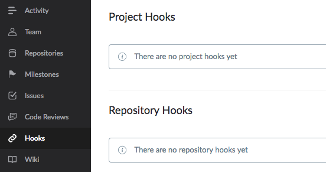Add a new Repository Hook by clicking the + button on the right.
Select your repository and select the Webhook service.
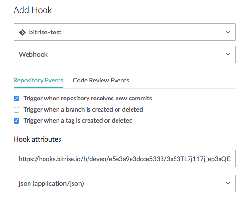Enter the
bitrise-webhooksURL (.../h/deveo/BITRISE-APP-SLUG/BITRISE-APP-API-TOKENin theUrlfield).Type
jsonin the Content type field.Click Save hook.
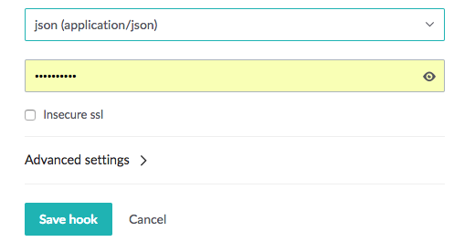
That’s all! The next time you push code or push a new tag a build will be triggered (if you have Trigger mapping defined for the event(s) on Bitrise).
Adding outgoing webhooks
You can create outgoing webhooks so that Bitrise automatically sends build event notifications to any service you would like.
You can configure Bitrise to send build event notifications to any service you would like. A build event is:
When a build is started.
When a build ends.
You can use this notification to share build statuses with your git provider if we don’t support it yet, notify only the right team about build success or failure, or use it to automate your in-house release pipeline.
You can add, remove and edit your webhooks easily on the website interface.
Accessing services that are behind a firewall
If you need to access a service that is behind a firewall, you can't use outgoing webhooks: the payload won't get past the firewall. To access such a service, we recommend configuring the firewall to allow the Bitrise build machines to access it, and then make the request from within the build machine. For more information on how to do so, check out the relevant guides:
Adding an outgoing webhook to an app
You can set up and configure the webhooks sent by Bitrise on the web UI. Let’s see how!
Open your app on Bitrise with a user that has the Admin role on the app.
On the main page of the app, click on the App Settings icon: .
On the left, select Integrations.
Scroll down to Outgoing Webhooks.
Click .
Enter the URL of the service where you wish to send the notification in the URL field.
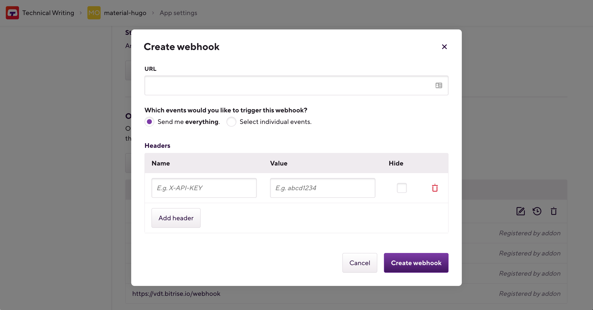Select either the Send me everything or the Select individual events option.
Send me everything: every supported event type will trigger the webhook. Currently, only build events are supported but there will be other options in the future!
Select individual events: you can specify the individual events that should trigger the webhook.
Optionally, add custom headers to your webhook: in the Headers section, specify a name and a value for the header. When done, click .
For example, if you have an API listening to the webhook, you can track the requests with API keys set as a custom header.
Hiding the header value
You can hide the value of your headers by checking the box under Hide. Please note that if you do this, you won't be able to view or change the value again.
Click Create Webhook.
And you’re done! You can modify your webhook at any time by clicking the pencil icon next to the webhook.
Adding custom headers to outgoing webhooks
You can add extra headers to your outgoing webhooks via the Code tab of the web interface. For example, if you have an API listening to the webhook, you can track the requests with API keys set as a custom header.
You can add custom headers either when:
Modifying an existing outgoing webhook by clicking the Edit button next to the URL.
To add the header:
Find the WEBHOOK HEADERS section.
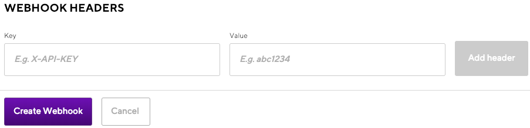Add a key and a value to the header. You need both to be able to save the header.
Click Add header.
Click Create webhook/Update webhook.
Checking outgoing webhook deliveries
You can check the recent deliveries of your outgoing webhooks at any time, and resend them if necessary. The deliveries are marked with appropriate status code, depending on whether the delivery was successful.
Open your app on Bitrise with a user that has the Admin role on the app.
On the main page of the app, click on the App Settings icon: .
On the left, select Integrations.
Scroll down to Outgoing Webhooks.
Find your webhook and select the icon.
Select a delivery and expand it to show the full request and the response.
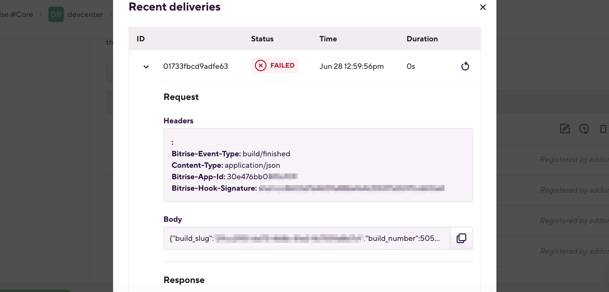You can redeliver the webhook payload at any time. Find the delivery you need and click the icon next to it.
Editing the payload
Before trying to deliver the webhook payload again, you can edit the webhook configuration. Close the Recent deliveries pop-up window and click the icon next to the webhook to edit it. When finished, click .